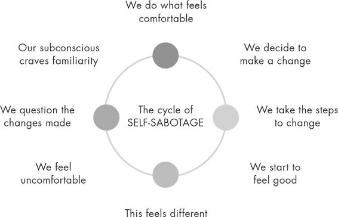

EXERCISE: BEHAVE THE WAY YOUR FUTURE SELF WOULD
EXERCISE: BEHAVE THE WAY YOUR FUTURE SELF WOULDALIGNING YOUR BEHAVIOUR MEANS SHOWING THE UNIVERSE, IN ACTION, WHAT YOU BELIEVE YOU DESERVE. THIS IS BECAUSE THE WAY WE BEHAVE IS A DIRECT REFLECTION OF OUR SELF-WORTH.
Aligning your behaviour means being proactive in your manifesting journey. Aligning your behaviour means being the energy you want to attract. Aligning your behaviour means stepping outside your comfort zone. Aligning your behaviour means aligning with your most authentic self because that self is the most magnetic version of you that exists.
This is the step that really differentiates the law of attraction from manifesting. The law of attraction says that what you think about most, you will attract into your life. But this can imply that there is a passiveness to the process. Manifestation is not passive: you cannot just be clear in your vision and then wait for it to appear.
To step into your power and to really shift your energy to attract the abundance you deserve, you must start behaving in a way that is aligned with the most empowered version of yourself and not the version of you that has been limited by fear and doubt.
BE PROACTIVE IN YOUR MANIFESTATION
TO EFFECTIVELY MANIFEST, YOU MUST BE CLEAR IN YOUR VISION, KNOW THAT YOU ARE WORTHY OF IT AND THEN YOU MUST BE PROACTIVE IN MAKING IT HAPPEN.
For example, let’s imagine you want to manifest a house in the countryside for you and your family. You must have a clear vision of the house, remove any fears or doubts surrounding it, trust that you are worthy of it and then you must be proactive in your search, for example by looking at property websites, speaking to estate agents or visiting the area to see if any houses are for sale. Similarly, if you wanted to manifest passing an exam, then you would need to be clear in your vision and then be proactive by committing time and energy to your revision and studies. No matter what you want to manifest, there will be an element of ‘doing’ that is needed. It is one of the biggest manifesting misconceptions that we can just visualize what we want and then expect it to show up for us without any effort required. I can certainly say that when manifesting my own career milestones, I did so only with the help of hard work, determination, persistence, self-discipline and motivation.
Being proactive requires fearlessness, a fearlessness that shows the universe ‘I am worthy, I am deserving, and I am ready.’
Think about this: how many times have you intentionally avoided being proactive because the fear of failure overwhelmed you? I was speaking with a new client last month who told me about an idea she’d had to host a supper club. She wanted advice on how to find the courage to move forward with it. A little further along in the conversation, I discovered that she’d had the idea for nearly two years. During that time, she had absolutely everything in place to make it work, but her fear that ‘no one would turn up’ literally paralysed her from moving forward. This is not an unusual story. Almost every day I will hear a friend, family member or colleague tell me about a brilliant idea they have, an idea that they never follow through with because they don’t believe they are good enough, worthy enough or capable enough to really make the idea come to life. How many times have you had an idea that you have let go because you were afraid you wouldn’t be able to make it work? How many times have you been too afraid to reach out to someone out of fear of rejection? How many times have you allowed yourself to dismiss your dreams because they felt too far out of reach?
Procrastination and apprehension about taking action are so often driven by fear of failure: we avoid applying ourselves because it is easier not to try at all than to try and then fail. When this fear of failure is influencing us, it is easy to make a whole bunch of excuses about why we can’t do something: we say we don’t have the time, resources or energy. What do these excuses and lack of action say to the universe? They say, ‘I’m not ready for it and I don’t really believe I am worthy enough to receive it.’ And as we know from Step 2: Remove Fear and Doubt (see page 23), this fear will block you from attracting the very thing that you desire.
BEING PROACTIVE TRANSCENDS THE FEAR OF FAILURE.
Imagine that you want to manifest a successful new business. Let me show you the difference between behaving in a way that is limited by fear and doubt (Version A) and behaving in a proactive way that is aligned with your vision and transcends fear and doubt (Version B).
Version A
Your fear of rejection prevents you from reaching out to new clients, your fear of judgement stops you from marketing yourself online, your doubts stop you from investing adequately into the business and your fear of failure blinds you from seeing potential opportunities and prevents you from taking risks.
You behave in a way that keeps you trapped in your comfort zone without potential for real growth and expansion.
Version B
You reach out to potential new clients, you promote yourself on every platform, you ask for advice from mentors, you are proactive in finding people to collaborate with, you see potential opportunities and grasp them, you find innovative ways to market yourself and you invest the time, energy and money needed for the business to succeed to the level that you desire.
It is clear to see how the way in which you behave would impact on your ability to manifest a successful new business. The person in version B will be proactively reaching their goals and, in doing so, will be much more effective in manifesting their dreams than the person in version A.
Another example of being proactive is this: if you want to manifest a loving relationship, you cannot simply put all the specific qualities and attributes of your perfect partner on a vision board and expect that person to appear. To manifest them into your life, you must align your behaviour accordingly. This would mean, first and foremost, treating yourself with the level of respect and love you want to attract (that is, by cultivating self-love). It would then mean being open to and proactive in creating opportunities to meet someone, whether that’s joining a dating app, accepting offers to be set up by a friend or simply going to more social gatherings.
Whenever you want to manifest something into your life, you have to align your behaviour by taking action and being proactive. Aligning our behaviour shows the universe, ‘I am ready, I am fearless, I am worthy.’ And the universe will meet that fearlessness and readiness with abundance.
Some of you reading this may feel that the fears and doubts you identified in Step 2: Remove Fear and Doubt (see pages 33–5) are still very real. You may be asking, ‘How can I align my behaviour when I don’t feel like I’ve completed Step 2?’ or ‘How can I be proactive when I still feel afraid that I will fail?’ The answer is that you work these steps in unison. Removing fear and doubt is an ongoing process, and it is something that you do alongside aligning your behaviour. Can you remember a time when you said you couldn’t do something but decided to try anyway? Can you remember how proud of yourself you felt afterwards? Did that feeling of pride then enable you to continue to take steps forward?
I see this with my son, Wolfe, all the time. We went to a ‘little gymnastics’ class last week and there was a balancing beam he wanted to walk along. He was convinced he couldn’t do it on his own, and he would reach for my hand to help him the whole way along. But when I gently let go and encouraged him to do it alone, I saw his face light up. He was so proud of himself. The next time he walked along the balancing beam, he looked at me as if to say, ‘Don’t worry, Mum, I’ve got this.’ This is how you behave in a way that transcends your fears and doubts: you do something, despite feeling afraid, and in taking action you build your self-belief and self-worth, which in turn drives your manifesting power and helps you to continue to take action going forward. It’s an upward cycle. Essentially, you just need to feel the fear and do it anyway.
You know that saying ‘Fake it until you make it’? Well, I heard a better version recently that made much more sense to me and fits perfectly with this step:
FAKE IT UNTIL YOU BECOME IT.
Sometimes we just have to take a leap of faith and trust that by acting in ways that align with the idea of who we want to be, we will take ourselves closer to becoming it. Remember, back in Step 1: Be Clear in Your Vision (see page 14), I said that one of the most important questions you can ask yourself on your manifesting journey is ‘Who do I want to become?’ When we have clarity on this person, on the most empowered version of ourselves, we can begin to behave in ways that align us with them from this moment.
To give you an example, I have a friend who for many years wanted to work as a life coach to help other men on their healing journeys. He had completed a coaching course and spent most of his spare time helping the people around him, but he held a great deal of fear around turning this into a profession. He didn’t trust that his experience and understanding had enough value to deserve payment, so he avoided letting anyone know that he was a certified coach and never risked exposing himself to failure. After I’d spent some time working through this with him and introducing him to the world of manifesting, he decided to start ‘faking it until he became it’. I said to him, ‘If you were already a successful coach, what would you be doing with your time? How would you be marketing yourself and what action would you take?’ He gave me a list of things that he could think of, then I told him to go ahead and do them. Within days, he had set up an Instagram page as a men’s coach, connected with other men in the industry, begun creating self-development content, advertised his own one-on-one sessions, and kept himself open to any and every opportunity that presented itself. Over the course of twelve months, slowly but surely he built up his presence in the wellness industry, created a loyal and engaged community of followers, was working with clients every single week and had hosted a free webinar for men in which he had put together a panel of eight influential men’s mental health experts. By aligning his behaviour with who he wanted to be, even when he was unsure of it himself, the universe rewarded him.
Sometimes, we just have to fake it until we become it.
Note: For anyone suffering from imposter syndrome, ‘fake it till you become it’ can be a great phrase to return to. When we start a new career or throw ourselves into something unknown, we can experience self-doubt that tells us we aren’t qualified, skilled or knowledgeable enough to do what we are doing. This is totally normal, and there aren’t many people who haven’t felt this way! Remind yourself that by aligning your behaviour, you can step into the most empowered version of yourself from now. With time, you will start to accept and believe the truth: that you are deserving of the position, that you are enough and that you are worthy of thriving.
Here is an exercise that can help you identify some of the ways you can align your behaviour with your manifestation by being proactive and taking action.
EXERCISE: BEHAVE THE WAY YOUR FUTURE SELF WOULD
I want you to take a moment now to imagine your future self. I want you to really sink into this exercise and fill your visualization with details. Imagine the version of you that is at the height of your manifesting powers and has drawn in all that you could want in your life.
Make it feel as real as possible, bringing your most magnificent self to life.
Now ask yourself the following questions:
How do I behave?
What do I do to live in such a self-loving, empowered and magnetic way?
List five things that your future self does, informed by the most powerful version of yourself.
These are the things I want you to start doing in your life right now to take you even closer to meeting your future self.
Whenever you think about the person you want to become, think of ways in which you can align your behaviour with that version of yourself from this very moment. Show the universe, in action, that you are ready to embody them, because they already exist within you.
GETTING COMFORTABLE WITH DISCOMFORT
As you begin aligning your behaviour with your manifestation and your future self, it is important to recognize that it won’t all feel easy and it certainly won’t always feel comfortable. In fact, aligning your behaviour will require you to step into a place of discomfort. Let me explain why.
Our subconscious finds comfort in what is familiar to us, even if what is familiar is not necessarily what is good for us. This is because familiarity feels safe. When we act in new ways, we will be encountering things that are unfamiliar. This unfamiliarity will feel uncomfortable and therefore unsafe. It will feel so uncomfortable that our subconscious will desperately try to pull us back into what it’s used to so that it can feel safe again. This is why we self-sabotage.

For example, let’s imagine that you are someone who has always taken a back seat or shied away from the spotlight. You’ve essentially cast yourself in a supporting role in the story of your life. After years of living like this, that is simply where your subconscious will feel most comfortable: when you hide in the shadow of others. So, when you decide to make a change and say, ‘Now is the time to step into my light, to show the world what I have to offer and finally be the protagonist of my own story,’ your subconscious will panic and try to pull you back into comfortable territory by encouraging you, on a subconscious level, to self-sabotage. It might do this by sabotaging opportunities for you to speak out or be seen or heard, or by subconsciously encouraging you to surround yourself with people who bring you down or whose energy will overshadow yours.
I had a friend who was trying to become more confident when meeting new people. She signed up to a parent-baby group that she began going to every week and being able to meet and connect with other new mums was really helping her to build her self-esteem. She seemed to be making an internal shift, but then, a couple of months later, I realized that she hadn’t gone back to the meet-up in weeks; every time she arranged to go, something would ‘coincidentally’ come up, for example she would have double-booked, she would suddenly feel too tired, or she would find herself unexpectedly busy on the day. I told her that all of this was subconscious self-sabotage at play, and only when she could recognize that could she begin to move past it.
Another example might be that your goal is to feel healthy, energized and physically fit. Your vision is clear and you see yourself waking up with energy and vitality and feeling fit enough to play outside with your children for hours on end. To reach this goal, you will first have to be proactive in changing your behaviour. For example, instead of making excuses not to exercise or to over-indulge in food which make you feel sluggish, you will have to commit to an exercise routine or to making healthier, more nourishing food choices. In other words, you have to be proactive by taking action. After doing this for some time, you will begin to see and feel a difference: your confidence will begin to grow. This is when your subconscious will panic. It doesn’t care that you are feeling good, it just cares that you feel different, and different, for your subconscious, doesn’t feel safe. So it will encourage you to self-sabotage by convincing you to binge, to skip your workouts or to give up on your goals altogether. Sound familiar?
I certainly used to find myself trapped in self-sabotaging cycles all the time. I was so comfortable in feeling sad, alone and full of self-loathing that every time I committed to making changes and started to feel better I would self-sabotage with food, alcohol, drugs, cigarettes and toxic relationships. It was only when I became aware of what my subconscious was trying to do that I was able to overcome the urges to self-sabotage and instead stay focused on where I wanted to be. I could then sit through the discomfort until I established a new familiarity – and that is how you create real and lasting change.
Whenever we enter a period of transformation and we begin to align our behaviour with what we want to attract into our lives, we must simultaneously expect a period of discomfort and then make a conscious commitment to accept it and sit through it. We must resist the urge to self-sabotage, and we must learn to live in this new, empowered place until it feels like home. Because, when we live in a place that is not limited by our fears and doubts, we unlock all the abundance of the universe.
STEPPING OUT OF YOUR COMFORT ZONE
Once we have understood the self-sabotaging cycle and the requirement to be OK with some degree of discomfort, we can align our behaviour in the most powerful and magnetic way of all: by regularly, and continuously, stepping outside our comfort zone.
TO MANIFEST CHANGE, WE MUST FIRST CREATE CHANGE. WE MUST DO SOMETHING DIFFERENT, WE MUST CHALLENGE OUR FEARS AND DOUBTS, WE MUST ACT AS OUR FUTURE SELF WOULD ACT AND WE MUST SHOW THE UNIVERSE HOW READY AND WILLING WE ARE TO STEP INTO OUR POWER.
On any manifesting journey, you will be required to step outside your comfort zone. It is non-negotiable. Every single time you step outside your comfort zone, you attract abundance to you. This is because magic happens outside your comfort zone.
People often say to me, ‘I’m thinking of quitting my job. Should I do it?’ or ‘I’ve had this idea for a new venture. Should I go for it?’ My answer is always the same: absolutely, yes. When you begin to realize that you have the power within you to create a wonderful, exciting and abundant life for yourself, you will naturally start to think of ways that you can step outside your comfort zone. The journey of manifesting is always accompanied with inspiration, creativity and an influx of ideas that will just come to you, seemingly out of nowhere. You might be meditating, about to fall asleep, out for a walk or talking to a friend, and an idea will flow in. I like to think of these ideas as little gifts from the universe. They come to you for a reason: they are an opportunity for you to step outside your comfort zone so that you can create the change you need to get to where you want to be. They are an opportunity for you to show the universe that you are not held back by fear and doubt. When the ideas come, do not ignore them. Instead, make the self-loving decision to take action and step outside your comfort zone.
Here are a few ways to help you step outside your comfort zone and into your manifesting power:
1. Be clear on your why
Before stepping outside your comfort zone, be clear on why you want to do so. The ‘why’ is what will drive you through the discomfort. The ‘why’ is what will keep you focused and connected to your vision and keep you motivated if you are met with any challenges or obstacles.
FAQ:
Q: How do I find out what my ‘why’ is?
A: Whenever you think of something you want to manifest, ask yourself, ‘What do I think achieving that goal will do for me energetically, emotionally, physically, mentally or spiritually? How will it affect my day-to-day life and my feelings of peace, contentment, self-love and joy?’
For example, let’s imagine that your friend tells you that a position is opening up at the firm she works at and the role feels just perfect for you. You immediately decide to apply but then see that, as part of the application process, you have to film yourself talking to camera. If you are someone who has always struggled with being in front of the camera, this would require you to sit through some discomfort while you step outside your comfort zone. So, you would really need to identify your ‘why’ so that it can drive you through the discomfort. It could be ‘This job would enable me to work in an area I am truly passionate about. I would feel excited to go to work in the morning and doing something I actually love would make me feel more at peace, it would bring more joy into my life and it would improve the overall quality of my life.’ By remaining focused on your ‘why’, you will be able to gain the momentum and courage required to film the clip, despite feeling a little uncomfortable or afraid, because you can clearly see the bigger picture and the end goal.
2. Remove excuses
Excuses are nothing more than a form of self-sabotage. They give us an ‘out’. Excuses come in many forms but, most commonly, they sound like this: ‘I’m too busy’; ‘I’m too tired’; ‘It’s too difficult’; ‘I’m not ready’; ‘I’ll do it another day’; ‘I don’t have the resources’; ‘It didn’t work last time I tried’; ‘I won’t be able to do it perfectly’; ‘I’m not good enough.’
But we must expose our excuses for what they really are: an expression of our fear and doubt. They come out to hold us back from moving forward and stepping into our power when we subconsciously feel that we are not yet ready for greatness. The way to remove excuses is to question every aspect of them. By questioning them, we take away their power.
The next time you say to yourself, ‘I am too busy,’ ask yourself, ‘Why am I telling myself that? What am I afraid of? What would happen if I removed the excuse?’
3. Don’t give up when faced with challenges
When we step outside our comfort zone, everything will be new, which means that inevitably we will be faced with some obstacles to overcome.
ONE OF THE MOST COMMON CHARACTERISTICS OF ANY SUCCESSFUL INDIVIDUAL IS THEIR ABILITY AND WILLINGNESS TO PERSIST THROUGH CHALLENGES.
I’m sure that every one of us can remember a time when we have buckled and given up at the first hurdle. Why do we do this? Because challenges trigger our insecurities and test our self-worth. If we are faced with something that we find difficult, we question our own abilities, or if a plan falls through, we worry that we are simply ‘unlucky’. We allow challenges to reinforce our limiting and subconscious beliefs that we are not worthy of having the things we desire most. So, then what do we do? We run – we run because our innate tendency is to escape from things that make us feel ‘bad’. But if you want to manifest successfully, you must resist the urge to give up and instead find an alternative way to move forward.
I have always been obsessed with reading, watching and hearing the stories of incredibly successful people, from CEOs to world-famous musicians. What I find most inspiring about their journeys is learning about the times they had to persist in the face of challenge, or when they had to think of creative new ways to overcome a potential deterrent to their dreams. It reminds me that the road to success, or to manifesting everything you want, is not always easy or straightforward. You have to show up for yourself, take action, and keep going, even when you might feel like throwing in the towel. I know that if I had given up at every challenge or opportunity that came my way, I would never, ever have succeeded in manifesting all the things that I have into my life. My own story was not a case of visualizing what I wanted, taking action and then seeing all of it come to me straight away. I still had to face rejections and hurdles. But I never allowed them to stop me from moving forward. I never let them derail me or distract me from my goal. In fact, I flat out refuse to be defeated by obstacles. When something doesn’t go right first time, I simply think of another way to do it.
Challenges are an inevitable part of life and, rather than seeing them as limitations, I urge you to begin to see them as gifts and opportunities. Challenges give us the chance to show up for ourselves, to learn something new, to build strength, knowledge and resilience. Challenges push us in new directions and give us new perspectives. Make a choice, right now, to be guided by challenges that you may face instead of being put off by them. In doing so, you send a message to the universe that says, ‘I am stronger than the challenge I am faced with,’ and then the universe will reward your self-belief with abundance.
4. The 5-second rule
One of my favourite speakers, Mel Robbins, has an amazing exercise that you can use whenever you are faced with an opportunity to step out of your comfort zone but are feeling fear or trepidation about doing so. She calls it ‘the 5-second rule’. Mel says, ‘The moment your instincts fire up, but you feel yourself hesitate, that’s when you use the “5-Second Rule”.’ You have five seconds. Start counting backwards to yourself from five to one, then move before you reach zero. She says that, ‘If you have an impulse to act on a goal, you must physically move within 5 seconds or your brain will kill the idea.’
I used this technique myself before I hosted my first ever in-person workshop. I was about to go on stage for the first time and my nerves had got the better of me. I was backstage behind a curtain, the microphone was on, I could hear people settling down, ready for me to begin, and then imposter syndrome hit me. What the hell was I doing, hosting a self-love workshop? I’m not a public speaker, I’m not experienced enough, I’m going to let them all down. This was a stupid idea. My inner critic was trying to paralyse me from stepping on to my stage. I counted down, ‘5 … 4 … 3 …’ and then, bam, I moved, I put one foot in front of the other, smiled at all the faces in front of me and began to talk. Within ten minutes, I knew something for sure: this was exactly where I was supposed to be. I suddenly felt so at home as I spoke to all these wonderful men and women in front of me about the power and importance of self-love. Now, countless workshops later, I use that technique before I step on to any stage.
I’LL SAY THIS AGAIN:
MAGIC HAPPENS OUTSIDE YOUR COMFORT ZONE.
CREATE HEALTHY HABITS
By now, I hope it is clear that our self-worth is integral to our ability to manifest and that the way in which we behave acts as an indicator to the universe as to how high or low our self-worth is.
One way that we can align our behaviour to raise our self-worth and boost our manifesting powers is to deliberately incorporate high-vibe daily practices into our routines. We can take self-love practices and turn them into heathy habits.
SOME OF MY FAVOURITE SELF-LOVE PRACTICES
Journaling, mantras, affirmations, meditation, daily walks, skincare routines, long baths, self-care, breathwork, exercise, yoga, gratitude.
Developing healthy habits is an effective way to align our behaviour so that we can manifest more effortlessly. For me, healthy habits are the basis of any self-development journey. Our habits become our foundation, and when we change our habits, we change our life. True and lasting change is really created in the small changes that you make day to day. So, to use habits to drive us towards the things we want to manifest into our lives, we must start forming habits that are in line with our future self.
HEALTHY HABITS HELP US TO EMBODY THE PERSON THAT WE WANT TO BECOME; IN OTHER WORDS, BE THE ENERGY WE WANT TO ATTRACT.
For example, if you want to manifest becoming a successful leader in business, you can begin to form the habits a leader in business might have, such as waking up early, making daily to-do lists, having a daily meditation practice to help manage stress or overwhelm, or carving out daily dedicated learning time. In committing to these practices from now, you begin to align your behaviour with the person you want to become. Your habits help you to raise your vibration to match the energy of your future self.
Our habits and our daily practices change our lives.
Let’s look at how different your day might look if you were someone that did not incorporate daily practices in the morning (Person A), as opposed to someone that did (Person B).
Person A
You wake up to your alarm, roll over and immediately begin scrolling through your social media feed. After ten minutes you get up, turn on the news, jump in the shower and quickly get ready before rushing through your breakfast and heading to work.
Person B
You wake up early to give yourself time to enjoy your daily practices, you roll over and press play on a ten-minute positive affirmations track before getting out of bed. Then you mindfully enjoy your morning coffee ritual before exercising for twenty minutes, shower and get dressed while listening to your favourite music, then sit down to eat a nutritious and delicious breakfast before heading to work.
Person B has done nothing extraordinary here: they have simply added three or four simple self-loving practices into their routine and committed to making the time for them. Yet can you imagine how differently the rest of their day might look compared to person A’s? Can you imagine, then, how different person B’s entire week, month or year would look compared to person A’s?
Motivational author John C. Maxwell says, ‘You will never change your life until you change something you do daily. The secret of your success is found in your daily routine.’
EXERCISE
In the box below, write down three daily practices you will begin to incorporate into your life.
Make a commitment to yourself to do them every day for sixty-six days (the number of days it is said to take to form a habit).
For example:
Continue to incorporate more and more healthy habits when you feel you are able to (don’t overwhelm yourself with too many at once). The more healthy habits we have in a day, the more opportunities we have to practise self-love and increase our ability to manifest all the things we want.
AUTHENTICITY
‘I had no idea that being your authentic self could make me as rich as I’ve become. If I had, I’d have done it a lot earlier.’
OPRAH WINFREY
As well as incorporating daily practices into your routine, being proactive in reaching your goals, becoming the energy you want to attract and stepping outside your comfort zone, aligning your behaviour also requires you to live authentically. It requires you to align what you do with what you think and who you really want to be.
Authenticity is an essential ingredient for successful manifestation because we become our most magnetic when we live and express our truth. Just think about the most magnetic people you know, the ones who walk into a room and light it up, the people who seem to always have others gravitating towards them. They are, most often, the people who are just completely, unapologetically and authentically themselves. They are proud of who they are, comfortable in their own skin and are never afraid to be different or to stand out.
I find, time and time again, that when anyone makes the decision to stop pretending to be something they are not and to instead embrace their most authentic selves, they thrive. I have received testimonials from countless men and women who have attended one of my workshops and then used the motivation from the session to let go of jobs, people and ideas that were not in line with their truth. They always describe the same story: once they let go of them, they created space to nurture the things that supported their most authentic selves. For example, starting a new job doing something they were actually passionate about, finally speaking out about things that mattered to them or only surrounding themselves with people who they felt truly understood by. Without exception, as soon as they began to do these things, they flourished. We are unstoppably magnetic when we are unapologetically ourselves.
So, how do we become connected with our most authentic selves? We must first learn to let go of who we think we should be, who other people expect us to be and who we once were. Only then can we uncover who we really are now.
From our earliest years, we search for clues from the people around us to tell us how to behave and how to be loved. We take note of when we do something that makes us lovable, and we do more of it. As we grow up, we continue this pattern: moulding ourselves based on the feedback we get from our family, friends and community. We are taught to look for external validation and associate our sense of self-worth with the opinions and judgement of others. It is through this process that we develop our ‘people-pleasing’ tendencies, which become the enemy of authenticity.
To begin the journey of discovering our most authentic selves, we must first gain awareness: every time we take action, we must recognize that we have a choice to make. The choice is this: ‘Do I behave to please others or do I behave to honour myself?’ If we choose the former, we inevitably sacrifice aligning our behaviour towards our own goals, dreams or visions.
ENERGY IS DIRECTIONAL: IT IS SIMPLY IMPOSSIBLE TO DIRECT OUR ENERGY TOWARDS SEEKING EXTERNAL VALIDATION WHILE SIMULTANEOUSLY DIRECTING IT TOWARDS THE PERSON THAT WE WANT TO BE OR THE THING THAT WE WANT TO MANIFEST.
I often speak to Wade, the father of my son, about authenticity, as he is incredibly passionate about helping others discover their truth and express their most authentic selves. Wade uses the metaphor of a garden to explain this process. He says:
‘Imagine yourself as a garden. Your deepest sense of self-love, worth and truth are the soil from which everything grows. Your conditioning and your life experiences so far mean that the garden is filled with different plants, but not all of them have been put there by you. Some of them are weeds which keep you from growing, others are plants that are not native to who you really are and some simply no longer feel like they belong in your garden. The process of expressing your most authentic self begins first by identifying those weeds and unwanted plants and very gently removing them. Getting down to the roots and taking them out so that the soil of your garden can be free of anything harmful. Then, once you feel like you have cleared the garden of those weeds and plants that are no longer necessary, of all your limiting beliefs and those ideas that do not serve you, you can begin to choose what goes in. You can nourish and care for the plants that empower you and you can choose new ones that express who you really are and who you want to be. You get to choose exactly what your garden looks like. You get to create every part of it and then nurture it with gentleness, compassion, love and respect. Ultimately, you deserve be a person of your own making: one who powerfully and beautifully celebrates who you choose to be, regardless of anyone else’s ideas or opinions.’
The journey to discover and express your most authentic self is one that will take time, but one that will be worth every step. The more you are connected to who you really are and what you really desire, the more magnetic you become and the greater your manifesting power. Every time you act, ask yourself, ‘Is this aligned with what I think, what I believe and who I want to be?’
Aligning your behaviour is manifesting in action. The things you do day to day, the way you behave, the way you act and the way you treat yourself: it all matters. The universe is responding to everything that you do.
Aligning your behaviour requires you to be proactive, take action, embody the person you want to become, move beyond your limiting beliefs or fears, step outside of your comfort zone, live authentically and cultivate self-love through daily practice, creating healthy habits and committing to your own wellbeing.